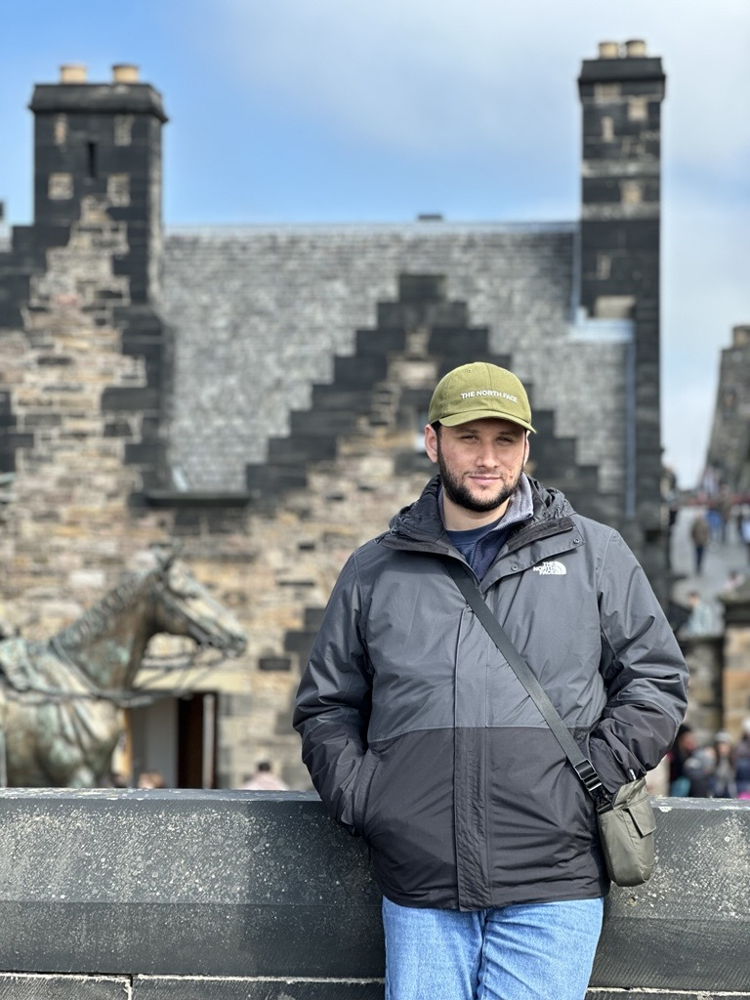

2025 – 2026
MSc Data Science & Artificial Intelligence with Distinction
Bournemouth University · United Kingdom
Weighted Average: 75.56%I am a Mechatronics Engineer with an MSc in Data Science and Artificial Intelligence, working across mechanical design, industrial automation, embedded systems, computer vision, robot learning, and intelligent robotic applications. My background combines hands-on engineering experience in production environments with the development of complete hardware–software systems, from CAD design and prototyping to perception, control, simulation, and AI-enabled decision-making.

Bournemouth University · United Kingdom
Weighted Average: 75.56%Erciyes University · Turkey
GPA: 2.92 / 4.00My Motivation
My engineering journey has developed through a combination of formal education, industrial experience, independent project work, and continuous technical learning. I began with mechatronics, mechanical design, embedded electronics, and hands-on prototyping, where I learned to approach problems from both a physical and systems perspective. Working directly with production machinery, automated lines, molds, maintenance activities, and robotic handling solutions strengthened my understanding of reliability, manufacturability, safety, and measurable engineering performance.
My professional experience in industrial environments also taught me that successful engineering requires more than designing an isolated component. Mechanical geometry, sensors, actuators, electronics, control logic, software, operator requirements, and production constraints must work together as a complete system. This systems-oriented approach continues to shape the way I design, evaluate, and improve technical solutions.
During my MSc in Data Science and Artificial Intelligence, I expanded this foundation into machine learning, computer vision, large language models, robot learning, and embodied AI. My dissertation brought these disciplines together through the design and development of an LLM-enabled humanoid robotic system that integrated custom mechanical hardware, embedded control, visual perception, inverse kinematics, natural-language interaction, action validation, and physical task execution.
I am particularly motivated by multidisciplinary engineering challenges in which intelligent software must operate within the limits of real hardware. I enjoy moving between CAD design, prototyping, electronics, low-level control, simulation, perception, data collection, model development, and system integration while maintaining a clear understanding of how each decision affects the final result.
My goal is to contribute to teams developing practical, safe, and technically rigorous products across mechanical design, mechatronics, robotics, industrial automation, embedded systems, and artificial intelligence. I value engineering work that produces tangible outcomes, supports continuous improvement, and transforms research or design concepts into systems that can perform reliably in real-world conditions.
Erciyes University
MEM R&D
Orta Anadolu
Yorglass
Yorglass
Bournemouth University
Get in touch
I am open to opportunities across mechanical design, mechatronics, robotics, artificial intelligence, embedded systems, and industrial automation worldwide.